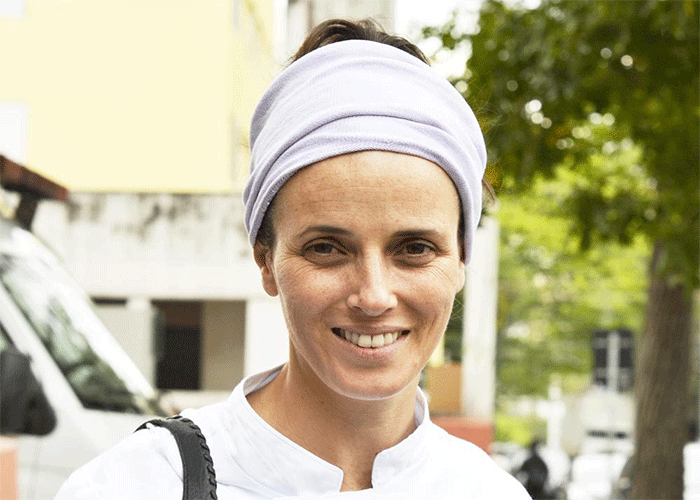
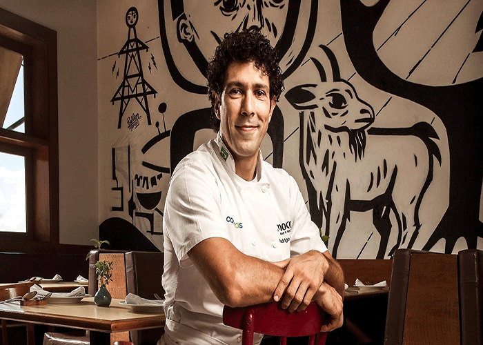
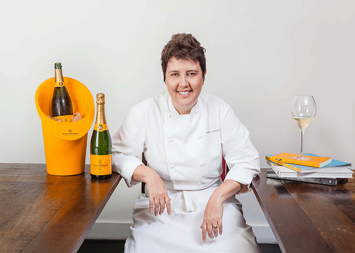
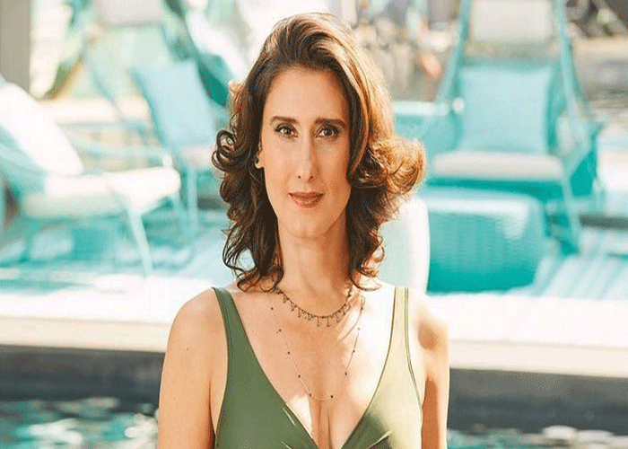

O mais premiado chef brasileiro da história, Atala comanda os restaurantes D.O.M e Dalva e Dito, ambos em São Paulo. É considerado um dos melhores chefs do mundo.
Sob influência familiar, foi na infância que Alex Atala teve seu primeiro contato com a região amazônica. Aos 19 anos, na escola de Hotelaria de Namur, na Bélgica,
Atala iniciou sua carreira como cheff. Na França trabalhou no restaurante Jean Pierre Bruneau e estagiou no renomado Hotel de la Cote D’Or. Em seguida partiu para
novos desafios em cozinhas de Montpellier e Milão.De volta a São Paulo em 1994, logo chamou atenção por seu desempenho à frente dos restaurantes Filomena e 72.
Em 1999, inicia sua carreira de chef-proprietário no aclamado Namesa. No mesmo ano, inaugurou o D.O.M. Restaurante e também uma nova era para a gastronomia brasileira,
na qual os ingredientes e a cultura alimentar de seu país são protagonistas em uma cozinha vanguardista, sofisticada e sempre surpreendente."
Helena Rizzo

filha de mãe artista e pai engenheiro, Helena Rizzo nasceu em 1978, em Porto Alegre. a verve artística da gaúcha manifestou-se, primeiramente, numa breve passagem pela Faculdade de Arquitetura. aos 18 anos, decidida a experimentar a vida fora da casa dos pais, Helena mudou-se para São Paulo. enquanto fazia alguns trabalhos como modelo,
foi garçonete da banqueteira Neka Menna Barreto e estagiou na cozinha dos restaurantes Roanne, de Emmanuel Bassoleil, e Gero, do Grupo Fasano.
convidada a chefiar a cozinha do extinto Na Mata Café, Helena Rizzo desconfiou de que talvez o universo da gastronomia fosse mesmo o seu. aos 21 anos, juntou dinheiro, pôs na mala o caderno no qual desenhava e anotava seus devaneios, e embarcou para a Europa. estagiou nos restaurantes La Torre e Sadler, ambos na Itália.
um dia, foi jantar no celebrado El Celler de Can Roca, em Girona (Espanha), e tudo começou a fazer sentido. entendeu que a comida poderia ser um meio de expressão artística, e não apenas um trabalho mecânico e monótono, como tinha sido a sua experiência até então. depois de muita insistência, ouviu um “sim” de Joan Roca, um dos proprietários. na cozinha do Celler, amansou os seus anseios. passou quatro meses na casa de Girona e um ano no Moo, restaurante dos Roca em Barcelona. foi no Celler que conheceu Daniel Redondo, então souschef dos Roca. apaixonou-se.
de volta a São Paulo, Helena recebeu de amigos a proposta de abrir um restaurante. convidou Daniel a se mudar para o Brasil e dividir a cozinha com ela. em 2006, nascia o Maní. à frente da casa por 11 anos, Helena e Daniel desenvolvem uma cozinha contemporânea calcada em ingredientes simbólicos da cozinha brasileira. suas criações, ora grandiosas, ora prosaicas, refletem memórias e o amor pelo produto. no início de 2017, Daniel desligou-se do Maní para desenvolver novos projetos, e Helena seguiu à frente do restaurante e das outras casas do Grupo Maní.
Rodrigo Oliveira

"Ele está na lista dos 100 brasileiros mais influentes de 2010, segundo a revista Época. Rodrigo Oliveira, um paulistano de 28 anos, é um cara boa pinta e que conseguiu criar, na Vila Medeiros, um restaurante de renome. Rodrigo é o chef que os chefs escolhem quando saem para comer. Ferran Adrià e Juan Mari Arzak, quando estiveram em São Paulo, foram levados por Alex Atala até as mesas simples do Mocotó e ficaram encantados – assim como presidentes, celebridades, chefs estrelados e pessoas simples que passam por lá. Todos têm ali a mesma acolhida.
O Mocotó é peculiar. “De certo modo, fazemos um trabalho inédito, colocando um restaurante popular no panteão dos restaurantes gastronômicos da cidade. Outro fator de atração é a associação do restaurante e do menu com a brasilidade. Quando um chef passa pela cidade, ele quer conhecer o que há de mais representativo da sua cozinha”, explica Rodrigo.
“A cozinha foi entrando na minha vida ao longo do caminho, não ficava com minha mãe ou avó fazendo bolinhos de chuva na infância”, conta o chef, que queria mesmo ficar perto do pai, seu herói. Seu Zé Almeida saiu do sertão pernambucano e veio para São Paulo. Depois de muito trabalho, em 1973, abriu seu próprio bar na Vila Medeiros. E é aí que a história de sucesso começa. As pessoas se acotovelavam para tomar o caldo de mocotó, servido em copos. Com o tempo, o bar ficou pequeno e foi preciso uma filial, do outro lado da calçada.
Rodrigo ajudava, fazendo um pouco de tudo. Como o pai queria filho formado, foi cursar Engenharia Ambiental. Seu Almeida, então, teve de viajar a Pernambuco por algumas semanas. O jovem largou a faculdade e passou madrugadas trabalhando na reforma do restaurante. Na volta, o pai levou um susto e deu bronca. Rodrigo, então, começou o curso de Gestão Ambiental, mas o contato com um sujeito que estudava Gastronomia o fez mudar de rumo definitivamente. Formou-se em Gastronomia, fez estágios e percorreu o país em busca de referências.
O Mocotó é hoje um restaurante da cozinha sertaneja. O caldo, feito do mesmo jeito há quase 40 anos, e o torresminho crocante são irresistíveis. “Nossa abordagem em relação à tradição é vanguardista. Sempre pensamos como fazer melhor, seja defumar levemente nosso torresmo e prepará-lo à la minuta ou cozinhar nossa carne-de-sol em sous-vide”, revela o chef."
Roberta Sudbrack

Com um estilo contemporâneo bastante detalhista, Roberta Sudbrack tem experiência de sobra para ser considerada uma das maiores chefs brasileira da atualidade. De 2004 a 2012 ganhou nada menos do que 12 prêmios, inclusive o Top Chefs of the World, na França.
Um dos seus primeiros contatos com a culinária foi aos 17 anos, quando vendia cachorro-quente na rua. De lá para cá, ela foi se desenvolvendo de maneira autodidata, até o ponto que chegou a comandar a cozinha do Palácio da Alvorada, cozinhando por 7 anos para o então presidente: Fernando Henrique.
Hoje, possui um restaurante com seu nome em que pratica um estilo de cozinha contemporânea. A gaúcha também gosta de explorar o conceito de comida de rua em seu foodtruck.
Paola Carosella

É bem provável que você já conheça a chef Paola da televisão. Afinal, nos últimos anos ela tem sido jurada do programa Master Chef, que tem uma grande audiência em sua versão brasileira. Mais do que jurada, Paola é grande chef de cozinha e atualmente possui o restaurante chamado Arturito, focado na cozinha clássica mediterrânea.
Apesar de ser Argentina de nascimento, a chef é brasileira de coração. Tendo aprendido os grandes segredos da gastronomia com chefs renomados da Europa, acabou vindo parar no Brasil, e aqui já está há 16 anos. Desde que chegou, não parou de colecionar prêmios, com por exemplo de chef do ano, além de melhor restaurante.